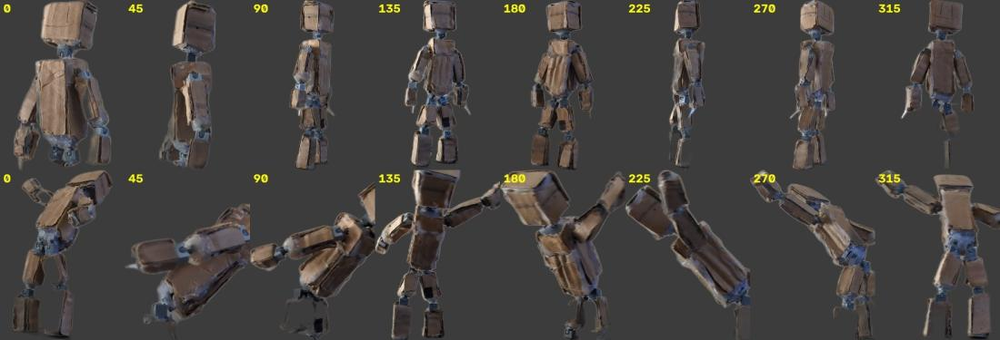
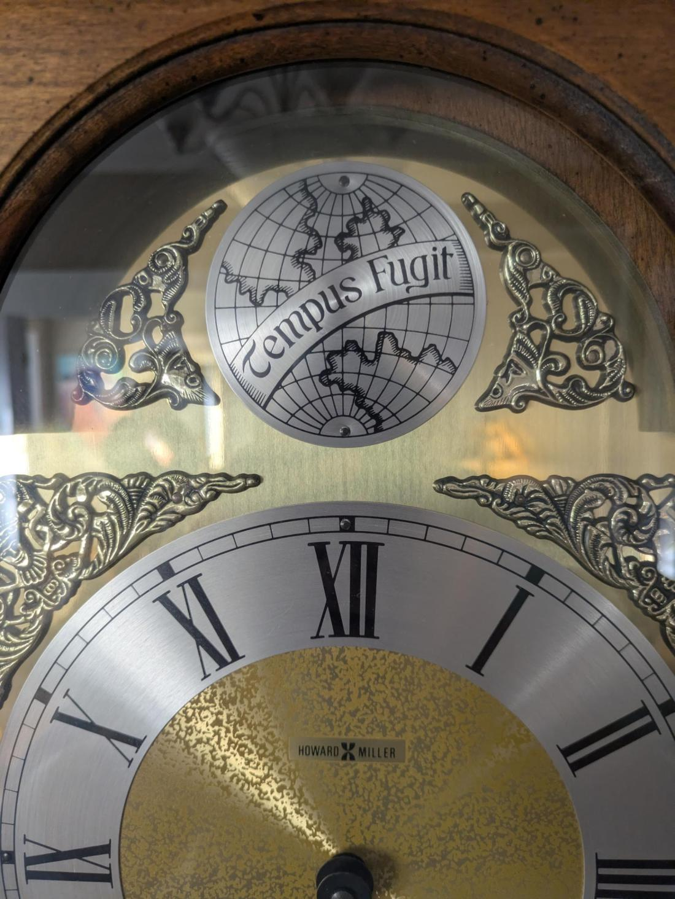
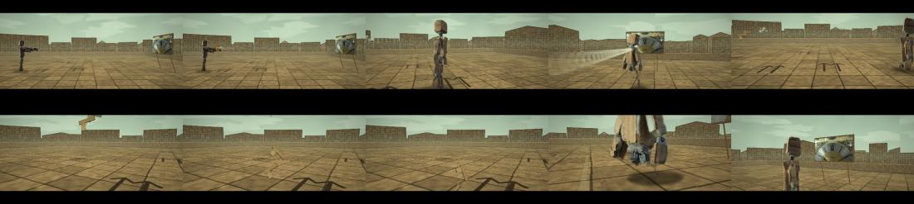
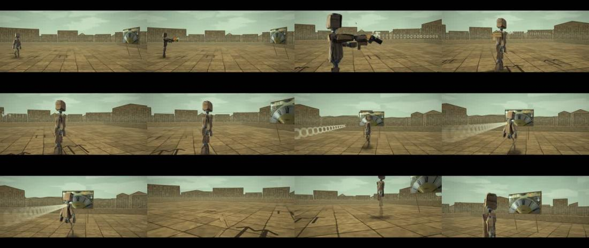

TSU-06 · case 7 of 11 · This Side Up
Tempus Fugit v4: The Bullet and the Clock
Can one shot run on two clocks at once?
Boone fires at the clock. The world stops; he doesn't. 54 s.
How it was made
- Write the story as times on screen.
- Draw the world's rate as a curve and integrate it.
- Run everything but Boone and the camera on world seconds.
- Make the sound from the same events.
What this case teaches
- Any object can be asked which clock it is on.
How it differs. v3 slowed everything. v4 splits the world from Boone.
Versions, in order
Every cut that was rendered, oldest first, with what changed from the one before. Videos are 640 px web encodes.
-
01
Body
Oct 18 16:11 · 0:18The shot alone, before the clock open and close.
-
02
Tempus Fugit v4
Oct 18 16:22 · 0:54Clock open, the shot, clock close, sound timed from the physics, credits.
The sheets, step by step
Grouped by stage of the work, with the time each file was written. Click any sheet to see it full size; the arrow keys move through them.
Step 1SheetsOct 18 15:30 to 16:23 · 4 sheets








Read the record
Carried forward
The two-clock rule runs ICE and FALL.